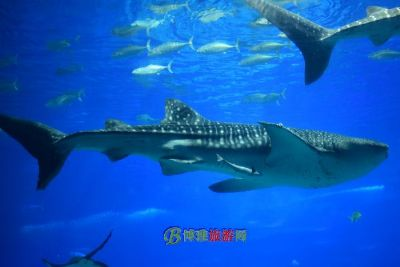

福州罗源湾海洋世界以“海洋之旅”为主题，位于罗源湾滨海新城东南面，占地172亩，建筑面积20470平方米，周边配备多达4000余个停车位的大型停车场及海洋世界商业广场等设施，能满足吃、住、行、玩、购、娱等六大旅游需求。
不同于其他海洋馆相对单一的展示功能，福州罗源湾海洋世界在展示功能设施上是最齐全的。项目的设计方负责人XX介绍，馆内共分为珊瑚礁原生态区、儿童互动区、海洋生物科普展区、梦幻水母宫区、大洋区、热带雨林区、两栖动物区、海豚表演剧场等八大功能区域，这些区域共同构成一个丰富多彩的海洋世界。其中像热带雨林区、两栖动物区是国内乃至亚洲地区许多海洋馆所没有的。
珊瑚礁原生态区——通过“城市围墙”红树林珊瑚礁与城市两者生态链的保护理念，倡导人与海洋和谐共处。在这里，游客可以亲手触摸形态各异的海洋生物，主要展示品种有鲎、海苹果、海星、海龟、神仙鱼等。
儿童互动区——主要展示的是书型展缸和儿童探险隧道，“寓教于乐”，主要展示有柠檬鲨、护士鲨、海豹等，孩子们可以通过探险隧道与鲨共舞。
